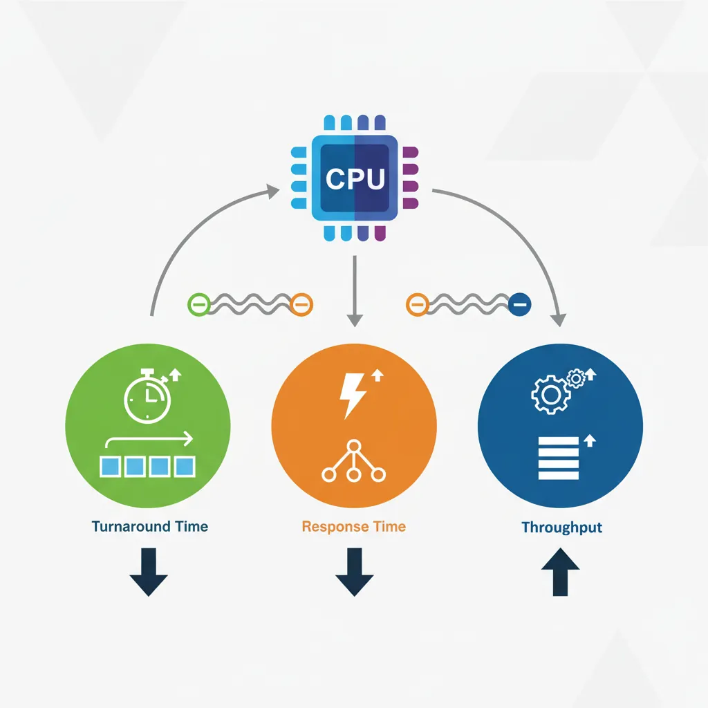
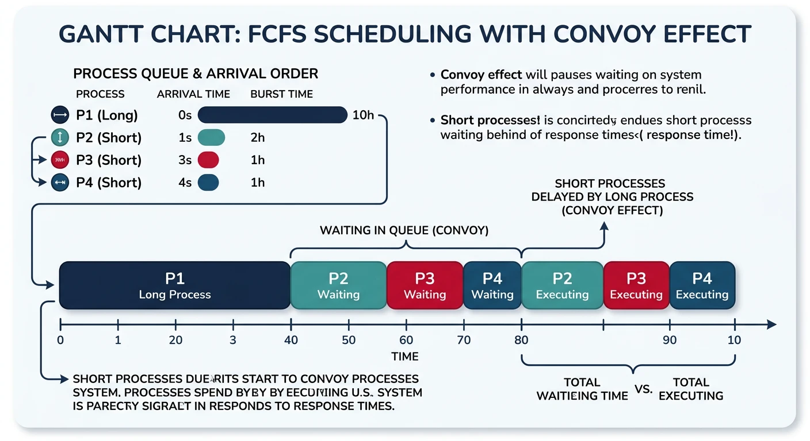
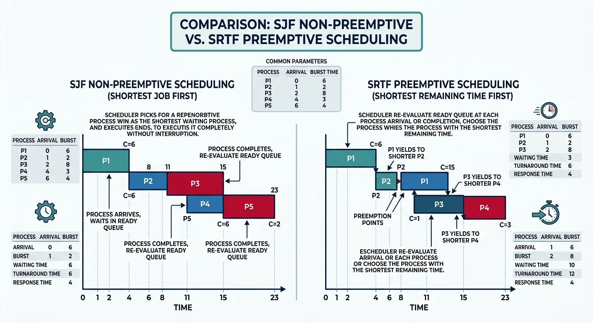
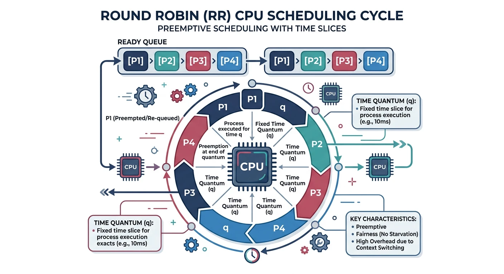
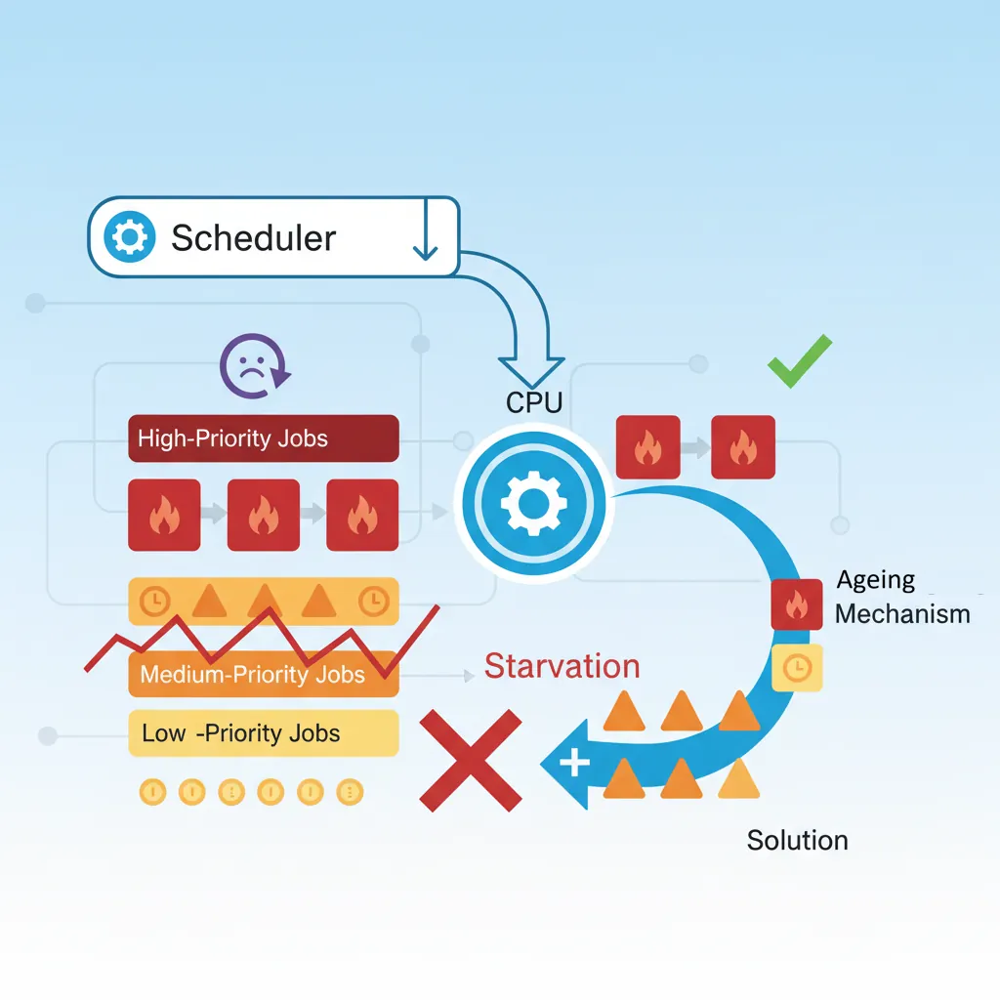

CPU scheduling determines which process runs on the CPU at any given time. The scheduler's decisions directly impact system responsiveness, throughput, and fairness.
Series Context: This is Part 11 of 24 in the Computer Architecture & Operating Systems Mastery series. Building on threads and concurrency, we now explore how the OS allocates CPU time.
The Scheduling Problem: With many processes wanting CPU time and only limited cores, how does the OS decide who runs next? This decision happens thousands of times per second and dramatically affects system performance.
Scheduling Criteria
Different scheduling algorithms optimize for different metrics. No single algorithm is best for all situations.

Key CPU scheduling performance metrics and their trade-offs
Performance Metrics
Scheduling Metrics:
══════════════════════════════════════════════════════════════
1. CPU UTILIZATION
• Percentage of time CPU is busy (not idle)
• Goal: Keep CPU as busy as possible (40-90% typical)
2. THROUGHPUT
• Number of processes completed per unit time
• Goal: Maximize (complete more work)
3. TURNAROUND TIME
• Total time from submission to completion
• Turnaround = Completion Time - Arrival Time
• Goal: Minimize
4. WAITING TIME
• Time spent waiting in ready queue (not running)
• Waiting = Turnaround - Burst Time
• Goal: Minimize
5. RESPONSE TIME
• Time from submission to first response
• Critical for interactive systems
• Goal: Minimize (users notice >100ms delays)
Example:
━━━━━━━━━━━━━━━━━━━━━━━━━━━━━━━━━━━━━━━━━━━━━━━━━━━━━━━━━━━━
Process arrives at t=0, starts at t=5, completes at t=15
Burst time (actual CPU needed) = 10
Turnaround = 15 - 0 = 15
Waiting = 15 - 10 = 5 (or 5 - 0 = 5)
Response = 5 - 0 = 5
Trade-offs: Optimizing one metric often hurts another. High throughput may increase response time. Low response time may reduce throughput. The scheduler must balance based on system goals.
First-Come First-Served (FCFS)
The simplest scheduling algorithm: processes run in the order they arrive. Non-preemptive—once a process starts, it runs to completion.

FCFS scheduling Gantt chart illustrating the convoy effect
Convoy Effect: FCFS suffers when a long CPU-bound process arrives first. All shorter processes must wait, causing poor average waiting time. Imagine being stuck behind a slow truck on a single-lane road!
Shortest Job First (SJF)
Schedule the process with the smallest burst time next. Proven optimal for minimizing average waiting time, but requires knowing burst times in advance.

SJF (non-preemptive) vs SRTF (preemptive) scheduling comparison
SJF Scheduling (Same processes as FCFS):
══════════════════════════════════════════════════════════════
Gantt Chart (shortest first):
┌─────┬─────┬────────────────────────────┐
│ P2 │ P3 │ P1 │
└─────┴─────┴────────────────────────────┘
0 3 6 30
Results:
━━━━━━━━━━━━━━━━━━━━━━━━━━━━━━━━━━━━━━━━━━━━━━━━━━━━━━━━━━━━
Process Completion Turnaround Waiting
━━━━━━━━━━━━━━━━━━━━━━━━━━━━━━━━━━━━━━━━━━━━━━━━━━━━━━━━━━━━
P1 30 30-0=30 30-24=6
P2 3 3-1=2 2-3=-1→0*
P3 6 6-2=4 4-3=1
━━━━━━━━━━━━━━━━━━━━━━━━━━━━━━━━━━━━━━━━━━━━━━━━━━━━━━━━━━━━
Average Turnaround: (30+2+4)/3 = 12 (vs 26 for FCFS!)
Average Waiting: (6+0+1)/3 = 2.3 (vs 16 for FCFS!)
*P2 arrived at t=1, started at t=1 (P1 hadn't started yet in
this non-preemptive version starting fresh)
SRTF (Shortest Remaining Time First) - Preemptive SJF:
══════════════════════════════════════════════════════════════
If new process arrives with shorter burst than current
remaining time → preempt current process.
Arrival: P1(0,24), P2(1,3), P3(2,3)
Timeline:
t=0: P1 starts (only one)
t=1: P2 arrives, 3 < 23 remaining → preempt P1, run P2
t=2: P3 arrives, 3 = 2 remaining → no preempt (tie)
t=4: P2 done, P3 runs (3 < 23)
t=7: P3 done, P1 resumes
t=30: P1 done
┌───┬─────┬─────┬──────────────────────────┐
│P1 │ P2 │ P3 │ P1 │
└───┴─────┴─────┴──────────────────────────┘
0 1 4 7 30
The Prediction Problem: SJF requires knowing burst times, but we can't know the future! Real systems estimate based on past behavior: exponential averaging of previous bursts.
Round Robin
Round Robin (RR) gives each process a fixed time slice (quantum), then moves to the next. Preemptive and fair—every process gets equal CPU time.

Round Robin scheduling: processes rotate through the CPU with a fixed time quantum
Round Robin with Time Quantum = 4
Round Robin (quantum = 4):
══════════════════════════════════════════════════════════════
Processes (all arrive at t=0):
P1: 24ms, P2: 3ms, P3: 3ms
Ready Queue Evolution:
t=0: [P1, P2, P3] → Run P1 for 4ms
t=4: [P2, P3, P1] → Run P2 for 3ms (finishes)
t=7: [P3, P1] → Run P3 for 3ms (finishes)
t=10: [P1] → Run P1 for 4ms
t=14: [P1] → Run P1 for 4ms
t=18: [P1] → Run P1 for 4ms
t=22: [P1] → Run P1 for 4ms
t=26: [P1] → Run P1 for 4ms (finishes, 4 remaining)
Wait, P1 needs 24ms total: 24 = 4+4+4+4+4+4 = 6 quanta
After t=4: P1 has 20ms left
After 5 more quanta (20ms): P1 done at t=4+3+3+20 = t=30
Gantt Chart:
┌────┬───┬───┬────┬────┬────┬────┬────┬────┐
│ P1 │P2 │P3 │ P1 │ P1 │ P1 │ P1 │ P1 │ P1 │
└────┴───┴───┴────┴────┴────┴────┴────┴────┘
0 4 7 10 14 18 22 26 30
Results:
━━━━━━━━━━━━━━━━━━━━━━━━━━━━━━━━━━━━━━━━━━━━━━━━━━━━━━━━━━━━
P1: Turnaround = 30, Waiting = 30-24 = 6
P2: Turnaround = 7, Waiting = 7-3 = 4
P3: Turnaround = 10, Waiting = 10-3 = 7
━━━━━━━━━━━━━━━━━━━━━━━━━━━━━━━━━━━━━━━━━━━━━━━━━━━━━━━━━━━━
Average Turnaround: (30+7+10)/3 = 15.67
Average Waiting: (6+4+7)/3 = 5.67
Time Quantum Selection:
══════════════════════════════════════════════════════════════
Too Large (q → ∞):
• Becomes FCFS (no preemption)
• Poor response time
Too Small (q → 0):
• Too many context switches
• Overhead dominates useful work
• "Processor sharing" - everyone progresses but slowly
Rule of thumb: 80% of CPU bursts should complete within one quantum
Typical values: 10-100 milliseconds
Context Switch Overhead:
━━━━━━━━━━━━━━━━━━━━━━━━━━━━━━━━━━━━━━━━━━━━━━━━━━━━━━━━━━━━
Quantum Context Switches Overhead (if switch = 0.1ms)
━━━━━━━━━━━━━━━━━━━━━━━━━━━━━━━━━━━━━━━━━━━━━━━━━━━━━━━━━━━━
100ms 10/sec 0.1%
10ms 100/sec 1%
1ms 1000/sec 10% ← Too much overhead!
Priority Scheduling
Each process has a priority; highest priority runs first. Can be preemptive or non-preemptive.

Priority scheduling with the starvation problem and aging solution
Priority Scheduling:
══════════════════════════════════════════════════════════════
Processes (lower number = higher priority):
┌─────────┬──────────┬────────────┐
│ Process │ Priority │ Burst Time │
├─────────┼──────────┼────────────┤
│ P1 │ 3 │ 10 │
│ P2 │ 1 │ 1 │ ← Highest priority
│ P3 │ 4 │ 2 │
│ P4 │ 5 │ 1 │
│ P5 │ 2 │ 5 │
└─────────┴──────────┴────────────┘
Execution order: P2 → P5 → P1 → P3 → P4
Gantt Chart:
┌───┬───────┬────────────┬────┬───┐
│P2 │ P5 │ P1 │ P3 │P4 │
└───┴───────┴────────────┴────┴───┘
0 1 6 16 18 19
STARVATION PROBLEM:
══════════════════════════════════════════════════════════════
Low priority processes may NEVER run if high priority
processes keep arriving.
Example: MIT's IBM 7094 in 1973 - low priority job submitted
in 1967 still hadn't run!
SOLUTION: AGING
• Gradually increase priority of waiting processes
• Eventually even lowest priority will become highest
• Prevents indefinite starvation
Aging Example:
Priority increases by 1 every 15 minutes of waiting
Process at priority 127 → after 32 hours → priority 0 (highest)
Priority Sources: Internal (time limits, memory needs, I/O vs CPU bound) or External (user importance, payment tier, process type). Unix "nice" values: -20 (highest) to +19 (lowest).
Multilevel Queue Scheduling
Multiple ready queues with different priorities and scheduling algorithms. Processes are permanently assigned to a queue based on type.
Multilevel Queue Structure
Multilevel Queue:
══════════════════════════════════════════════════════════════
┌─────────────────────────────────────────┐ Highest Priority
│ Queue 1: Real-Time Processes │
│ (FCFS or Priority within queue) │
├─────────────────────────────────────────┤
│ Queue 2: System Processes │
│ (Priority scheduling) │
├─────────────────────────────────────────┤
│ Queue 3: Interactive Processes │
│ (Round Robin, q=20ms) │
├─────────────────────────────────────────┤
│ Queue 4: Batch Processes │
│ (FCFS) │
└─────────────────────────────────────────┘ Lowest Priority
Rules:
• Higher queue always preempts lower
• No process in lower queue runs if higher queue non-empty
• Each queue can use different algorithm
Multilevel FEEDBACK Queue:
══════════════════════════════════════════════════════════════
Processes can MOVE between queues based on behavior!
┌─────────────────────────────────────────┐
│ Queue 0: RR, quantum = 8ms │ ← New processes start here
│ │
│ Didn't finish? ─────────────────┐ │
└─────────────────────────────────────│───┘
▼
┌─────────────────────────────────────────┐
│ Queue 1: RR, quantum = 16ms │
│ │
│ Didn't finish? ─────────────────┐ │
└─────────────────────────────────────│───┘
▼
┌─────────────────────────────────────────┐
│ Queue 2: FCFS (batch queue) │ ← CPU-bound processes end here
└─────────────────────────────────────────┘
Benefits:
• Interactive processes (short bursts) stay in high queues
• CPU-bound processes sink to lower queues
• Self-adjusting based on actual behavior
Completely Fair Scheduler (CFS)
Linux's default scheduler since 2.6.23. Instead of time slices, CFS tracks virtual runtime—how much CPU time each process has received.
CFS Concept
Completely Fair Scheduler (CFS):
══════════════════════════════════════════════════════════════
Idea: Track "virtual runtime" (vruntime) for each process.
Always run the process with SMALLEST vruntime.
Virtual Runtime:
vruntime += actual_runtime × (default_weight / process_weight)
• Higher weight (lower nice) → vruntime increases slower
• Lower weight (higher nice) → vruntime increases faster
Example with nice values:
━━━━━━━━━━━━━━━━━━━━━━━━━━━━━━━━━━━━━━━━━━━━━━━━━━━━━━━━━━━━
Process Nice Weight After 10ms real time
━━━━━━━━━━━━━━━━━━━━━━━━━━━━━━━━━━━━━━━━━━━━━━━━━━━━━━━━━━━━
P1 0 1024 vruntime += 10ms
P2 -5 3121 vruntime += 3.3ms (runs more)
P3 +5 335 vruntime += 30.5ms (runs less)
P2 gets ~3x more CPU than P1, P1 gets ~3x more than P3
Data Structure: Red-Black Tree
══════════════════════════════════════════════════════════════
[P3: 50ms]
/ \
[P1: 30ms] [P5: 80ms]
/ \
[P2: 20ms] [P4: 45ms]
• Ordered by vruntime (leftmost = smallest = runs next)
• O(log n) insert, delete, find-min
• Leftmost node cached for O(1) access
Scheduling:
1. Pick leftmost node (smallest vruntime)
2. Run for "time slice" (dynamic, based on load)
3. Update vruntime
4. Reinsert into tree
5. Repeat
# View scheduler settings on Linux
$ cat /proc/sys/kernel/sched_latency_ns
24000000 # Target latency: 24ms
$ cat /proc/sys/kernel/sched_min_granularity_ns
3000000 # Minimum time slice: 3ms
# Check a process's nice value
$ ps -o pid,ni,comm -p $$
PID NI COMMAND
12345 0 bash
# Change nice value
$ nice -n 10 ./cpu_intensive_task # Lower priority
$ sudo nice -n -10 ./important_task # Higher priority (need root)
Real-Time Scheduling
Real-time systems have strict timing requirements. Missing a deadline can be catastrophic (hard real-time) or degrading (soft real-time).
Real-Time Scheduling:
══════════════════════════════════════════════════════════════
HARD REAL-TIME:
• Deadline MUST be met (100% guarantee)
• Examples: Pacemakers, aircraft controls, ABS brakes
• Missing deadline = system failure
SOFT REAL-TIME:
• Deadline SHOULD be met (best effort)
• Examples: Video playback, audio processing
• Missing deadline = degraded quality
Linux Real-Time Policies:
━━━━━━━━━━━━━━━━━━━━━━━━━━━━━━━━━━━━━━━━━━━━━━━━━━━━━━━━━━━━
Policy Priority Description
━━━━━━━━━━━━━━━━━━━━━━━━━━━━━━━━━━━━━━━━━━━━━━━━━━━━━━━━━━━━
SCHED_FIFO 1-99 FIFO within priority, no preemption
SCHED_RR 1-99 Round-robin within priority
SCHED_OTHER 0 CFS (normal processes)
SCHED_BATCH 0 CFS, throughput-oriented
SCHED_IDLE 0 Only when system idle
Real-time (FIFO/RR) ALWAYS preempts normal (OTHER/BATCH/IDLE)
Rate Monotonic Scheduling (RMS):
══════════════════════════════════════════════════════════════
For periodic tasks: Higher frequency → Higher priority
Tasks:
T1: Period=50ms, Execution=25ms → Priority HIGH
T2: Period=100ms, Execution=35ms → Priority LOW
Schedulable if: Σ(Ci/Pi) ≤ n(2^(1/n) - 1)
For n=2: 25/50 + 35/100 = 0.5 + 0.35 = 0.85 ≤ 0.83
0.85 > 0.83 → Might miss deadlines! (need EDF or faster CPU)
Priority Inversion: A high-priority task waiting for a resource held by a low-priority task, while medium-priority tasks run. Famous example: Mars Pathfinder 1997 reset bug. Solution: Priority inheritance—temporarily boost holder's priority.
Conclusion & Next Steps
CPU scheduling is fundamental to OS performance. We've covered:
FCFS: Simple but suffers from convoy effect
SJF: Optimal average waiting but requires prediction
Round Robin: Fair and responsive with proper quantum
Priority: Flexible but needs aging to prevent starvation
Multilevel Feedback: Adaptive based on process behavior
CFS: Linux's fair scheduler using virtual runtime
Real-Time: Guaranteed deadlines for critical systems
Key Insight: There's no universally "best" scheduler. Desktop systems prioritize responsiveness (CFS), servers prioritize throughput, embedded systems prioritize real-time guarantees. Know your workload!